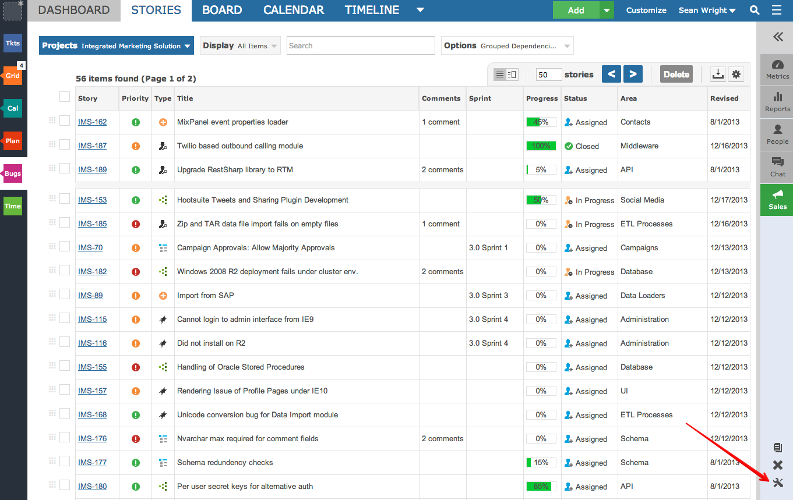
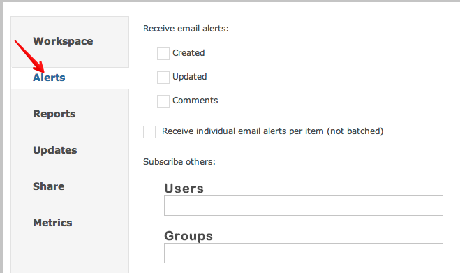
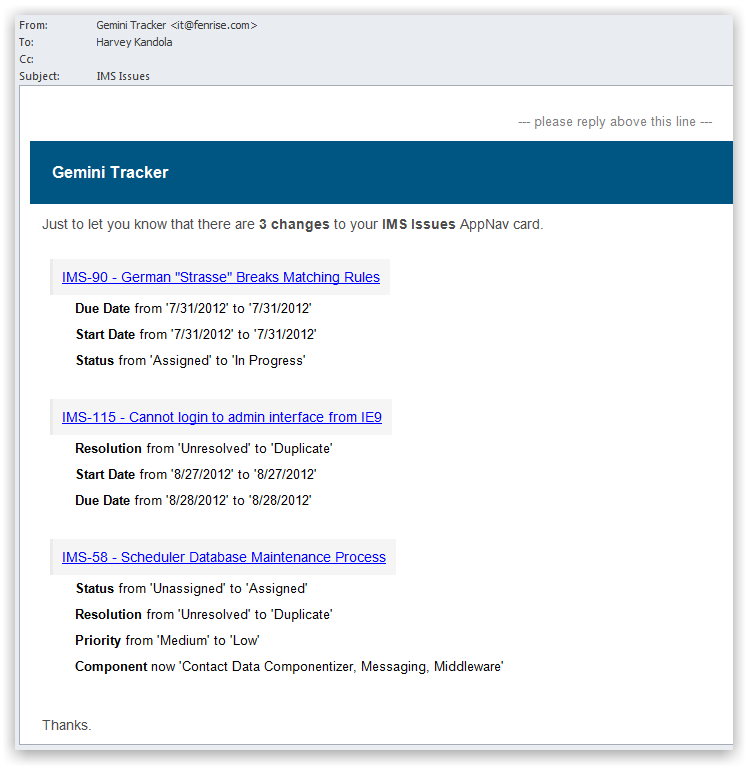

You can choose to receive email notifications any time something changes inside a workspace.

You can choose to receive email alerts when items are created, updated or commented upon.

Note you can also determine if you would like to receive an email for each item, or one email for all items affected (batched email alerts).
You can also subscribe others to receive emails as well. This negates the need for co-workers to login and subscribe for themselves.
Every email will detail the which fields were changed per item.
